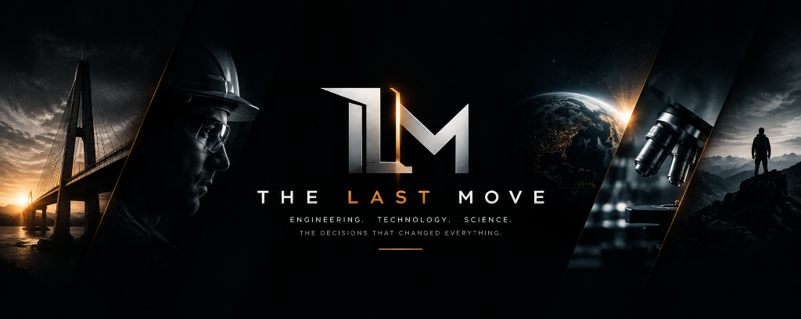

SYS // 01 · INFRASTRUCTURE
Engineering
The megastructures, industrial machines, subterranean transit networks, and high-stakes engineering calculations that conquer geography.

Stories Behind a Complex World.
Investigating the megastructures, breakthrough inventions, and pivotal human decisions behind the complex systems shaping civilization.
Core Investigations
From colossal physical infrastructure to nanoscale computing and cosmological frontiers, we deconstruct the systems that define human capability.
The megastructures, industrial machines, subterranean transit networks, and high-stakes engineering calculations that conquer geography.

Silicon lithography, quantum computing architecture, autonomous networks, and the technological leaps redefining civilization.

Particle physics accelerators, deep space radio telescope arrays, genetic mapping, and the scientific experiments unlocking the universe.
THE LAST MOVE
Beyond the Surface
We go beyond what happened to explore how it happened, why it mattered, and what changed everything.
Every engineering project, every technology, every scientific breakthrough has a hidden layer of decisions, compromises, failures and consequences that most people never see. THE LAST MOVE finds those stories.
Investigation Architecture
Every story has layers. We investigate the decisions, systems and consequences hidden beneath the surface.
What the world sees. The outcome, the headline, the catastrophic failure or triumph.
The complex machinery, metallurgy, physics, and software architectures running behind closed doors.
The critical boardroom choices, budget tradeoffs, cognitive biases, and turning points that determined fate.
What changed forever, what failed, what succeeded — and the lasting ripple effects shaping our present.